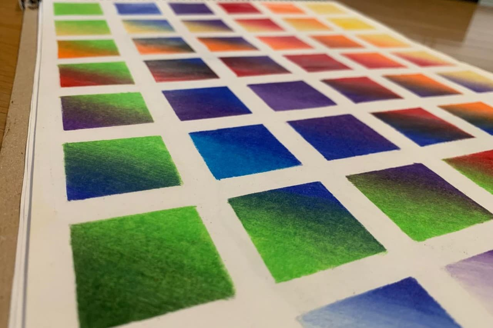

El dibujo como diario
Mi formación técnica en diseño es el cimiento, pero mi esencia habita en el papel. Entiendo el arte como una transmutación: el acto de crear nos transforma a nosotros antes que al objeto. Prefiero estar tras el lente, capturando la esencia de lo que nace.

De la Curiosidad a la Disciplina
Iniciamos en el asombro. Exploramos las potencialidades en un entorno de comodidad y confianza, para luego, con la disciplina como base, cruzar el umbral hacia nuevas habilidades. Mi metodología se basa en identificar el talento natural para transformarlo en destreza real.
Bitácora de Trabajos